原文连接:https://www.cnblogs.com/dashucoding/p/10721177.html
php概述
什么是php，PHP语言的优势，PHP5的新特性，PHP的发展趋势，PHP的应用领域。
PHP是超文本预处理器，是一种服务器端，跨平台，HTML嵌入式的脚本语言，具有c语言，Java语言，和Perl语言的特点，是一种被广泛应用的开源式的多用途脚本语言，适合web开发。
PHP是b/s体系结构，属于三层结构，PHP的好处，开发源代码软件，安全性高，跨平台特性，支持广泛的数据库，易学性，执行速度快，免费，模板化，支持面向对象与过程，内嵌zend加速引擎。
PHP5的新特性，构造函数和析构函数，对象的引用，克隆，私有等，接口，抽象类，_call，_set，_get，静态成员。
PHP应用，中小型网站的开发，web管理系统，企业级应用开发，多媒体系统开发等。
PHP的扩展库，内置标准扩展库，PHP5，spl,sqlite,dom,mysql等，需要在php.ini文件来完成。
php.ini找.dll，所有扩展库。
学习语言的方法，明确自己的学习目标和方向，扎实的基础，多实践，多思考，多请教等。
创建网站，明确网站主题，收集材料，规划网站，制作网站，上传，宣传，维护。
PHP开发工具，dreamweaver,zendstudio,editplus2等。
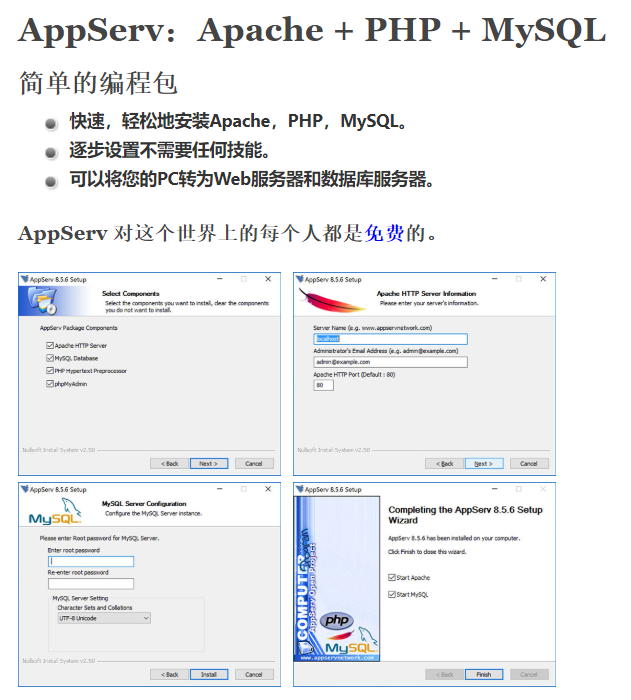
使用appserv组合包，完成apache+mysql+php+phpmyadmin的安装与配置。
<!DOCTYPE html PUBLIC "-//W3C//DTD XHTML 1.0 Transitional//EN" "http://www.w3.org/TR/xhtml1/DTD/xhtml1-transitional.dtd">
<html xmlns="http://www.w3.org/1999/xhtml">
<head>
<meta http-equiv="Content-Type" content="text/html; charset=gb2312" />
<title>第一个PHP程序</title>
</head>
<body>
<?php
echo "Hello World!!!";
?>
</body>
</html>php的标记风格，注解分类，数据类型，常量，变量，运算符，表达式，函数，编码规范
xml风格：
<?php
echo "dashucoding";
?>
脚本风格：
<script language="php">
echo "dashucoding";
</script>
简短风格：
<?
echo 'dashucoding';
?>
asp风格：
<%
echo 'dashucoding';
%>
共4种注解
// 单行注解
/**/ 多行注解
# shell风格的注解php数据类型：标量数据类型，复合数据类型，特殊数据类型，转换数据类型。
8种原始类型，分4中标量类型，boolean布尔型，integer整型，float/double浮点型，string字符串型；两种复合类型，arrray数组，object对象；两种特殊类型，resource资源，null。
标量数据类型是数据结构中最基本的单元，只能存储一个数据，PHP标量数据类型有4种。
单引号和双引号，双引号可以将变量自动替换成实际数值，而引号将变量按照普通字符串输出。
定义字符串的三种方式：单引号，双引号，界定符。
转义字符
\n 换行
\r 回车
\t 水平制表符
\\ 反斜杠
\$ 美元符号
\' 单引号
\'' 双引号界定符格式：
$string = <<< str
输出字符串
str;
<?php
echo <<< str
字符串
str;
?>
界定符中结束标识符必须要单独另起一行，并不可以用空格。复合数据类型有 两种，一种为 数组，一种为 对象。
$array = ('value1','value2',...);
$array[key] = 'value';
$array = array(key1 => value1, key2 => value2 ...);特殊数据类型包含 资源 和 空值 两种。
资源是一种特殊的变量，可叫句柄，保存在外资源的一个引用，通过专门的函数来建立和使用，null为特殊的值，表示变量没有值。
使用资源类型时，系统会自动启动垃圾回收机制，释放不再使用的资源。
空值出现的情况，还没有赋值，被赋值为null，被unset()函数处理过的变量。
转换数据类型
boolean 转换布尔型
null，0，和未赋值或数组为false，false为0，true为1
string 转换字符型
integer 转换整型
float 转换浮点型
array 转换数组
object 转换对象
settype()用于类型转换，将指定的变量转换为指定的数据类型
bool settype(mixed var, string type)
第一个参数为指定的变量，第二个参数为指定的类型，参数type为boolean，float，integer，array，object，null，string。使用integer操作符能够可以直接输出转换后的变量类型，使用settype()返回的是boolean类型。第一种原变量不会发生变化，第二种原变量被改变了。
检测数据类型
is_bool检测变量是否是布尔类型
is_string检测变量是否是字符串类型
is_float/is_double 检测变量是否为浮点类型
is_null 检测变量是否为整数
is_array 检测变量是否为数组
is_object 检测变量是对象类型
is_numeric 检测变量是否为数字
is_integer/is_int 检测变量是否为整数php常量，声明和使用常量，预定义常量
常量是不可变的值，被定义后，不管怎样都不会被改变。
使用define()函数来定义常量
define(string constant_name, mixed value, case_sensitive = true)
函数定义一个常量
常量名称， 常量值， 指定是否大小写敏感
mixed constant(string const_name);
函数动态获取常量的值，常量名直接获取，另一种为constant()
判断一个常量是否被定义：
bool defined(string constant_name);预定义常量
__FILE__ 文件名
__LINE__ 程序员行数
PHP_VERSION 程序的版本
PHP_OS 操作系统名称
TRUE FALSE NULL
E_ERROR E_WARNING E_PARSE E_NOTICEphp变量，声明和使用变量，变量的作用域，可变变量，预定义变量
变量是在程序执行过程中数值中可以变化的量
php预定义变量
预定义变量可以获取用户会话，用户操作系统等信息。
$_SERVER['SERVER_ADDR'] 当前脚本所在的服务器的ip地址
$_SERVER['SERVER_NAME'] 服务器主机名
$_SERVER['REQUEST_METHOD'] 访问页面时的请求方法
$_SERVER['REMOTE_ADDR'] 正在浏览当前页面用户的IP地址
$_SERVER['REMOTE_HOST'] 正在浏览当前页面用户的主机名
$_SERVER['REMOTE_PORT'] 服务器使用的端口
$_SERVER['SCRIPT_FILENAME'] 当前执行脚本的绝对路径名
$_SERVER['SERVER_PORT'] 服务器所使用的端口
$_SERVER['SERVER_SIGNATURE'] 服务器版本和虚拟主机名的字符串
$_SERVER['DOCUMENT_ROOT'] 当前运行脚本所在的文档根目录
$_COOKIE 通过HTTPCookie传递到脚本的信息
$_SESSION 包含与所有会话变量有关的信息
$GLOBALS 已定义全局变量组成的数组
$_POST 通过POST方法传递的参数的相关信息
$_GET 通过GET方法传递的参数的相关信息php运算符
算术运算符，字符串运算符，赋值运算符，位运算符，逻辑运算符，比较运算符，错误控制运算符，三元运算符，优先级。
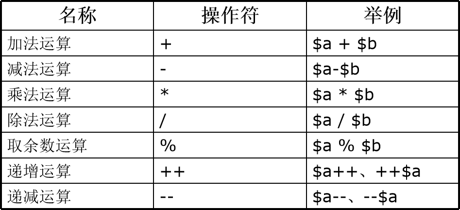
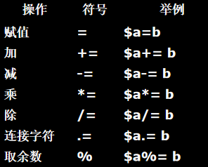
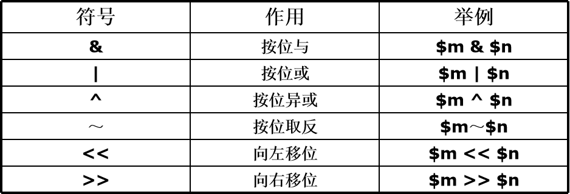
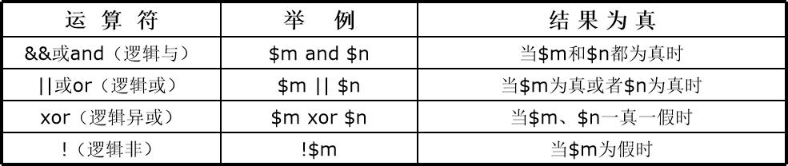
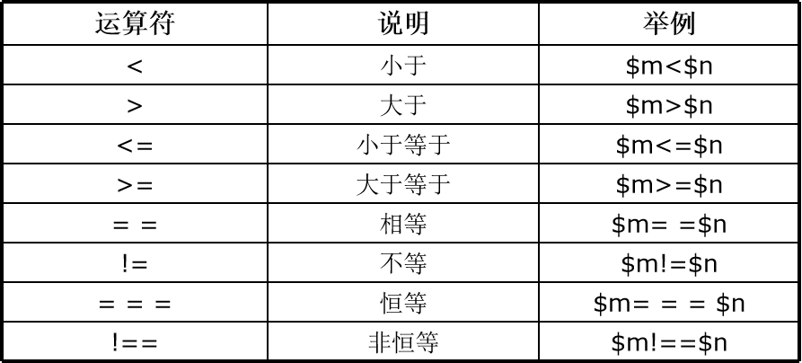
错误控制运算符
@用于对错误信息进行屏蔽而已
<?php
$err = @(3/0);
?>三元运算符-三目运算符
<?php
$value=10;
echo ($value == true)? dashu : dashucoding;
?>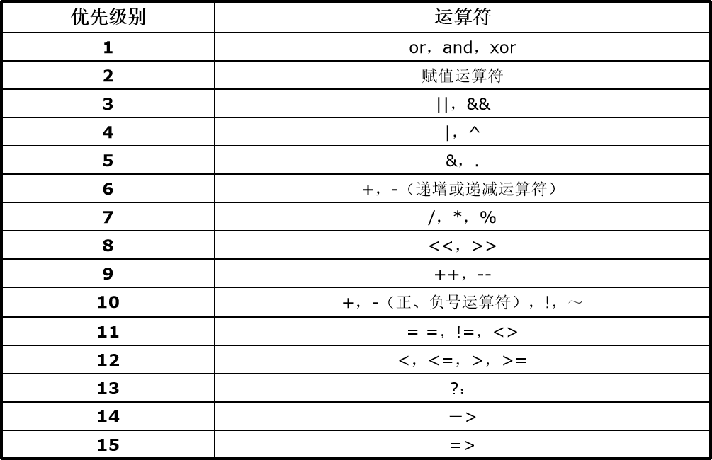
php函数，定义和调用函数，函数间的传递参数，函数中返回值，变量函数，对函数的引用，取消引用。
定义和调用函数，将功能写在代码块中:
function name($str1,...){
}函数传参，被传入的参数为实参，定义的参数为形参。
参数传递有三种：
- 按照值传递
- 按照引用传递
- 默认参数
<?php
function add($m){
$m = $m+1;
echo "体内".$m;
}
$m=1;
add($m);
echo "体外".$m;
?>
结果, 函数内:$m为2，体外为1
传引用 使用&
<?php
function add(&$m){
$m = $m+1;
echo "体内".$m;
}
$m=1;
add($m);
echo "体外".$m;
?>从函数中返回值return()。
变量函数，对函数的引用，取消引用。
<?php
function &add($a=0){
return $a;
}
$str = &add('dashucoding');
echo $str;
?>unset()函数取消引用，用于断开变量名和变量内容之间的绑定，而不是销毁变量的内容。
什么是PHP编码规范，书写规则和命名规则
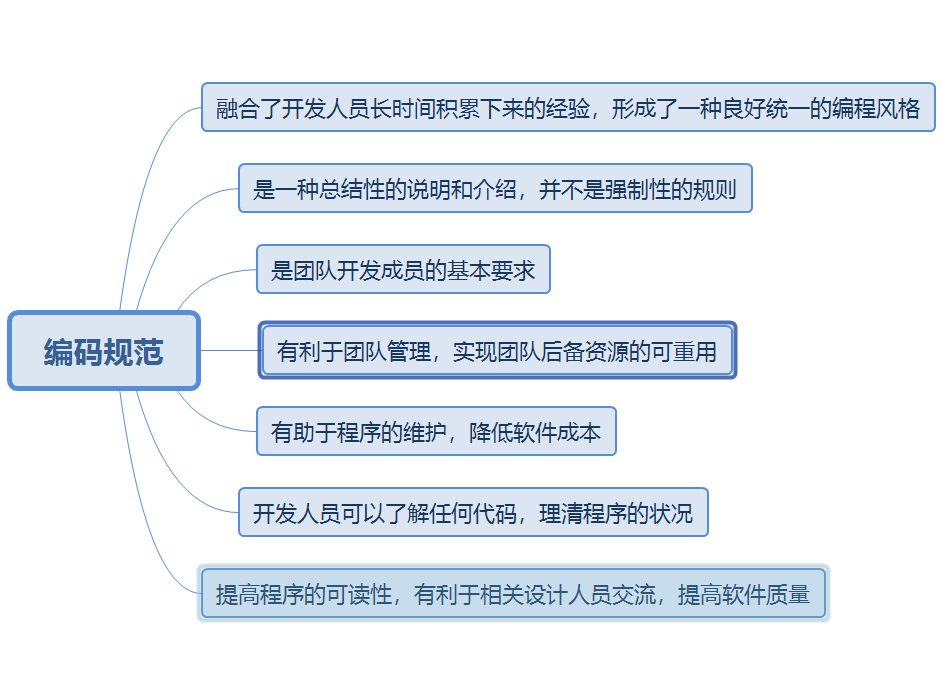
PHP的数据类型，常量，变量，运算符，表达式，自定义函数，数据类型之间的转换，系统预定义常量，变量，运算符的优先级等。
流程控制语句
if语句，if...else语句，elseif语句，switch...case语句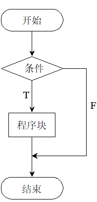
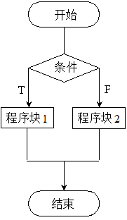
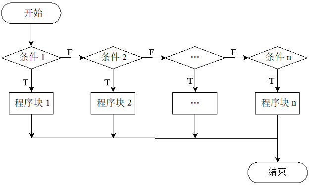
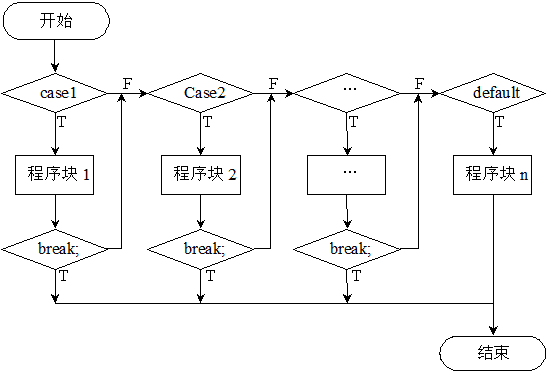
while循环，do...while循环，for循环，foreach循环，break/continue语句等。
break/continue语句，break关键字终止当前的循环，跳出多重循环，break $num; continue只是终止本次循环。
foreach($arr as $key => $value){
echo $key.'=>';
foreach($value as $va){
echo ' " '.$va.' " ';
}
echo '<br>';
}字符串，单引号，双引号，字符串连接符，字符串操作
字符串是由零个或多个字符组成的一个集合
单引号和双引号的区别，单引号中的内容是只能被作为普通字符串处理，双引号的作用可以被解释。sql查询时，所有字符串都必须是单引号。
字符串操作：
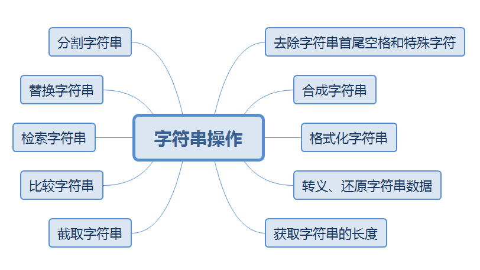
trim()函数去除字符串左右两边的空格和特殊字符
ltrim()去除左边的空格和特殊字符
rtrim()去除右边的空格和特殊字符
string trim(string str [,string charlist]);
string ltrim( string str [,string charlist]);
String rtrim(string str [,string charlist]);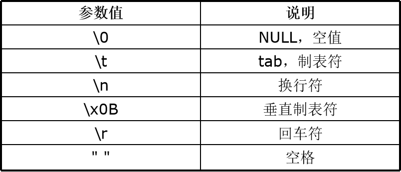
字符串的三种定义方法：
- 单引号
- 双引号
- 界定符
//转义、还原字符串数据
addslashes()函数
string addslashes (string str)
stripslashes()函数
string stripslashes(string str);
addcslashes()函数
string addcslashes (string str, string charlist)
stripcslashes()函数
string stripcslashes (string str)
int strlen(string str)
获取指定字符串str的长度
string substr ( string str, int start [, int length])
截取字符串
比较字符串
strcmp()函数按照字节进行比较
strcmp()和strcasecmp()
int strcmp ( string str1, string str2)
strnatcmp()函数按照自然排序法进行比较
int strnatcmp ( string str1, string str2)
strncmp()函数指定从源字符串的位置开始比较
int strncmp(string str1,string str2,int len)查找字符串strstr()函数
string strstr(string haystack, string needle)// strstr()函数获取上传图片的后缀
<form method="post" action="index.php" enctype="multipart/form-data">
<input type="hidden" name="action" value="upload"/>
<input type="file" name="u_file"/>
<input type="submit" value="上传"/>
</form>
<?php
if($_POST[action] == "upload") {
$file_path="./uploads\\";
$picture_name=$_FILES[u_file][name];
$picture_name=strstr($picture_name,".");
if($picture_name != ".jpg"){
echo"<script>alert();window.location.href="index.php";</script>";
}elseif($_FILES[u_file][tmp_name]{
move_uploaded_file();
}else
echo"";
}
}
?><body>
<center>
<label>请选择要上传的图片（图片格式为.jpg）：</label>
<form method="post" action="index.php" enctype="multipart/form-data">
<input type="hidden" name="action" value="upload" />
<input type="file" name="u_file"/>
<input type="submit" value="上传" />
</form>
<?php
if($_POST[action] == "upload"){ //判断提交按钮是否为空
$file_path = "./uploads\\"; //定义图片在服务器中的存储位置
$picture_name=$_FILES[u_file][name]; //获取上传图片的名称
$picture_name=strstr($picture_name , "."); //通过strstr()函数截取上传图片的后缀
if($picture_name!= ".jpg"){ //根据后缀判断上传图片的格式是否符合要求
echo "<script>alert('上传图片格式不正确,请重新上传'); window.location.href='index.php';</script>";
}else if($_FILES[u_file][tmp_name]){
move_uploaded_file($_FILES[u_file][tmp_name],$file_path.$_FILES[u_file][name]); //执行图片上传
echo "图片上传成功!";
}
else
echo "上传图片失败";
}
?>
</center>
</body>substr_count()函数检索字符串出现的次数
int substr_count(string haystack, string needle)
<?php
$str="";
echo substr_count($str,"");
?>
替换字符串
str_ireplace()函数使用新的字符串替换原始字符串中被指定要替换的字符串。
mixed str_ireplace(mixed search,mixed replace, mixed subject[,int &count])
substr_replace()函数
对指定字符串中的部分字符串进行替换
格式化字符串
string number_format(float number,[int
num_decimal_places],[string dec_seperator],string
thousands_ seperator)
分割字符串
array explode(string separator,string str,[int limit])
合成字符串
string implode(string glue, array pieces)<body>
<?php
$str="\r\r(:@_@ dashu @_@:) ";
echo trim($str);
echo "<br>";
echo trim($str,"\r\r(: :)");
?>
</body><?php
$content = "北京,上海,天津,重庆,河北,山西,辽宁,吉林,黑龙江,江苏,浙江,安徽,福建,江西,山东,河南,湖北,湖南,其他";
$data=explode(",",$content);
for($index=0;$index<count($data);$index++){ //数组循环
echo $data[$index];
echo "</br>";
}
?>结言
好了，欢迎在留言区留言，与大家分享你的经验和心得。
感谢你学习今天的内容，如果你觉得这篇文章对你有帮助的话，也欢迎把它分享给更多的朋友，感谢。
感谢！承蒙关照！您真诚的赞赏是我前进的最大动力！